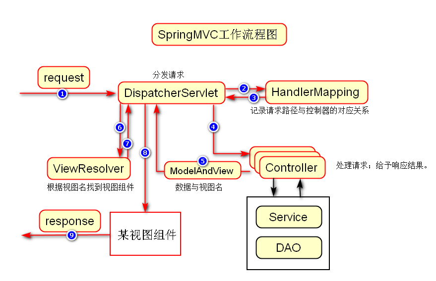
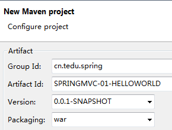
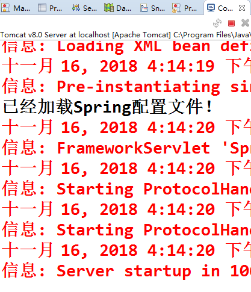
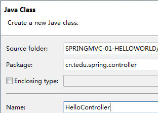
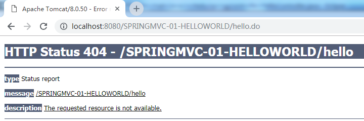
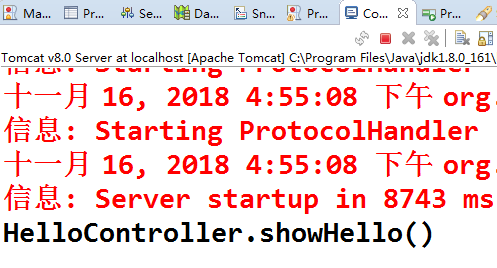
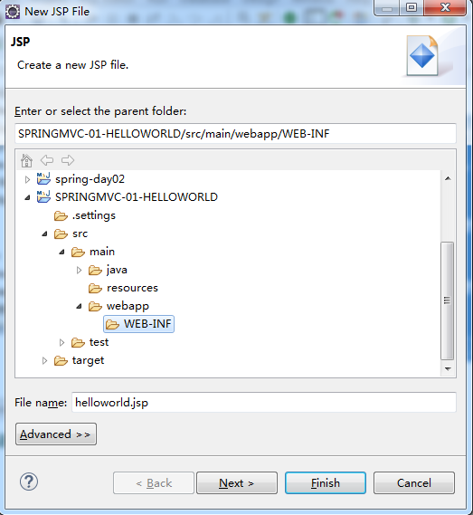
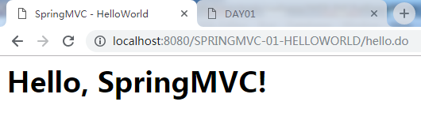

SpringMVC框架
1. 作用
解决了V-C的交互问题，即视图与控制器的交互问题。
在原生的Java EE技术中，使用Servlet作为项目中的控制器，用于接收用户的请求，并给予响应结果。这种做法最大的问题在于：在常规做法中，每个Servlet对应1个请求路径，例如LoginServlet处理login.do的请求，而RegisterServlet处理register.do的请求，所以，会导致Servlet数量太多，不便于管理（无论从源文件的数量，还是从配置文件的内容），且对象太多进而占用大量内存空间的问题！
并且，在请求的处理过程中，还存在许多操作不简便的做法！
1.2. SpringMVC核心组件
- DispatcherServlet
前端控制器，主要职责是接收所有请求（根据配置文件来决定），并将请求转发给对应的控制器，接收控制器的处理结果，确定最终由哪个视图完成响应！
- HandlerMapping
处理请求路径与控制器的映射关系。
- Controller
实际处理请求的组件，例如接收请求参数，决定最终是转发或重定向的方式来响应。
- ModelAndView
控制器的处理结果，其中的Model表示转发的数据（如果是重定向，则Model没有意义），而View表示最终负责响应的视图组件的名称。
- ViewResolver
根据视图组件的名称，确定具体使用的是哪个视图组件。

1.3. SpringMVC-HelloWorld
1.3.1. 创建项目
创建Maven Project，勾选Create a simple project，然后，Group Id值为cn.tedu.spring，Artifact Id值为SPRINGMVC-01-HELLOWORLD，Packaging选择war：

接下来，需要执行4个步骤（以后每次创建项目时都需要做的事情）：
- 生成
web.xml文件； - 添加依赖：在此前的项目中找到
pom.xml，将其中的依赖的代码复制到当前项目中，关于依赖的jar包，会越用越多，学习时，只加不减； - 复制
spring.xml文件到当前项目中，并删除其中的配置，除非你确定这些配置是当前项目中必须使用的； - 为项目添加Tomcat运行环境；
1.3.2. 配置DispatcherServlet
由于需要DispatcherServlet接收所有请求，所以，首先必须在web.xml配置它：
<!-- 配置DispatcherServlet -->
<servlet>
<servlet-name>SpringMVC</servlet-name>
<servlet-class>org.springframework.web.servlet.DispatcherServlet</servlet-class>
</servlet>
<servlet-mapping>
<servlet-name>SpringMVC</servlet-name>
<url-pattern>*.do</url-pattern>
</servlet-mapping>经过以上配置，则任何以.do作为后缀的请求，都将由DispatcherServlet来处理！
由于项目是基于Spring的，希望项目启动时就加载Spring的配置文件，并使得DispatcherServlet已经完成初始化可以随时接收请求，所以，还需进一步的配置：
<!-- 配置DispatcherServlet -->
<servlet>
<servlet-name>SpringMVC</servlet-name>
<servlet-class>org.springframework.web.servlet.DispatcherServlet</servlet-class>
<!-- 配置spring的配置文件 -->
<init-param>
<param-name>contextConfigLocation</param-name>
<param-value>classpath:spring.xml</param-value>
</init-param>
<!-- 启动Tomcat时即初始化该Servlet -->
<load-on-startup>1</load-on-startup>
</servlet>
<servlet-mapping>
<servlet-name>SpringMVC</servlet-name>
<url-pattern>*.do</url-pattern>
</servlet-mapping>至此，当项目启动时，就会初始化DispatcherServlet，并且，在初始化过程中，会加载Spring的配置文件。
测试
如果Spring能正常工作，则配置是成功的！
在src\main\java中创建一个测试类cn.tedu.spring.test.Test，并且，显式的添加构造方法，并输出内容：
@Component
public class Test {
public Test() {
System.out.println("已经加载Spring配置文件！");
}
}然后，在Spring的配置文件中添加组件扫描：
<context:component-scan base-package="cn.tedu.spring" />最终，把项目部署到Tomcat，并启动Tomcat，在启动日志中如果能够看到以上输出语句，则成功！

1.3.3. 设计目标
发出请求http://localhost:8080/项目名称/hello.do，要求在界面中显示HelloWorld字样。
1.3.4. 处理请求
以上完成了流程中的第1步，接下来，如果发出hello.do请求，就会被DispatcherServlet接收得到，然后，DispatcherServlet应该根据hello.do请求路径去询问HandlerMapping得知由哪个控制器去处理请求，原始的实现方式是使用SimpleUrlHandlerMapping类去进行配置，不过，这种配置方式非常麻烦，而且，对应关系不明确（所有的路径与控制器的配置都在同一个配置文件中，导致不便于管理），所以，后续都是使用注解完成相关配置，则在开发过程中，跳过第2步和第3步（只是开发时不用关注，框架的执行流程不变）。
为了确保有控制器处理请求，所以，创建HelloController：

所有的控制器都应该是由Spring管理的，所以，需要为控制器类添加@Controller注解：
@Controller
public class HelloController {
}然后，在类中自定义处理请求的方法，方法的访问权限是public的，返回值暂时使用String，方法的名称可以自由定义，方法的参数暂时留空：
public String showHello() {
}在SpringMVC中，请求对应的可以是某个方法，而不一定每个请求对应一个控制器类，如果请求对应的是以上方法，则需要在方法的声明之前添加@RequestMapping("/hello.do")：
@RequestMapping("/hello.do")
public String showHello() {
}完成以上步骤后，即表示：路径为/hello.do的请求将触发showHello()方法被执行！
测试
在以上方法中输出任意语句，然后，启动项目，请求对应的路径，观察控制台输出：
@RequestMapping("/hello.do")
public String showHello() {
System.out.println(
"HelloController.showHello()");
return null;
}实际运行效果是：页面会显示错误：

控制台可以看到输出语句：

1.3.5. 显示页面
至此，执行流程已经完成前4步，接下来，控制器应该向DispatcherServlet返回结果：
@RequestMapping("/hello.do")
public String showHello() {
// 测试
System.out.println(
"HelloController.showHello()");
// 返回视图组件的名称
return "helloworld";
}以上返回的字符串表示最终负责显示的视图组件的名称，但是，并不表示是哪个文件！
接下来，需要配置ViewResolver，使得DispatcherServlet通过它可以知道刚才控制器返回的"helloworld"到底是哪个页面！
实际使用的ViewResolver是InternalResourceViewResolver，需要在spring.xml进行配置：
<!-- 配置视图解析器ViewResolver -->
<bean class="org.springframework.web.servlet.view.InternalResourceViewResolver">
</bean>InternalResourceViewResolver的工作方式是以项目的根路径为参考（在开发时，对应的是webapp文件夹），使用前缀+视图组件名+后缀得到视图文件的位置，例如实际存在的jsp文件是webapp/WEB-INF/helloworld.jsp，由于它本身使用webapp作为根级，所以，前缀是/WEB-INF/，后缀是.jsp，结合控制器返回的"helloworld"进行拼接，就可以得到以上路径，从而确定视图组件的位置，例如配置为：
<!-- 配置视图解析器ViewResolver -->
<bean class="org.springframework.web.servlet.view.InternalResourceViewResolver">
<!-- 配置前缀 -->
<property name="prefix" value="/WEB-INF/" />
<!-- 配置后缀 -->
<property name="suffix" value=".jsp" />
<!-- 经过以上配置后， -->
<!-- 当前项目中的jsp文件都应该放在/WEB-INF/下 -->
</bean>基于视图解析器的前缀是/WEB-INF/，后缀是.jsp，结合控制器返回的"helloworld"字符串，则需要在WEB-INF文件夹下创建名为helloworld.jsp的文件完成最终的显示：

通过浏览器再次访问，实际效果应该是：

1.3.6. 小结
本案例中关于
web.xml中的DispatcherServlet的配置，和spring.xml中的InternalResourceViewResolver的配置，是相对固定的配置，在后续的项目开发时，可以直接复制使用，但是，注意理解配置的值的意义；处理请求的方法的声明语句应该例如：
public String xx()处理请求的方法的返回值可以理解为JSP文件的文件名；